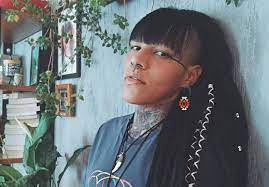

Em Salvador, a preparação é feita no Centro de Apoio Técnico TRE-BA
 Katú Mirim (9 de outubro de 1986) é uma rapper, cantora, compositora, atriz e ativista da causa indígena. Katú Mirim é reconhecida por suas letras, que através do rap/rock (ou hip-rock como ela cunhou em 2021), reconta a história da colonização pela ótica indígena, através do rap ela fala das suas vivencias, identidade, gênero e orientação sexual (mulher lésbica).
E por levantar questões, até então pouco discutidas no cenário musical atual, como indígenas em contexto urbano, o resgate da ancestralidade, o uso indiscriminado da cultura indígena e a forma como são tratados os indígenas no Brasil.
Katú Mirim nasceu e cresceu no interior Paulista. Com onze meses de idade foi adotada por um casal de não-indígenas. Veio ter conhecimento de que era adotada ainda na infância e aos treze anos descobriu que era filha biológica de pai indígena e mãe negra. Descobriu que sua família biológica é composta por indígenas e negros. Sua bisavó materna foi sequestrada da aldeia pelo seu avô, já sua família paterna tem como ascendente o povo Boe Bororo.
Inicialmente Katú buscou informações sobre o seu povo Boe Bororo (etnia de seu pai biológico) e estudou sobre sua ancestralidade, resgatando sua auto estima e se afirmando como indígena Boe Bororo. O povo Boe Bororo foi sequestrado de Mato Grosso e escravizado na cidade de Jundiai deixando na cidade seus descendentes.
Katú Mirim ganhou notoriedade na internet quando publicou no YouTube um vídeo levantando a hashtag "#indionaoefantasia" abrindo o debate sobre os símbolos que eram utilizados de maneira indiscriminada e questionando aos usuários, se a sua utilização realmente se tratava de uma homenagem.
Em 2017, estreou no rap com o single Aguyjevete voltando para o cenário musical com uma música que fala da resistência do povo indígena e negro. Antes disso Katú teve bandas de Rock mas que não saíram da garagem.
Em 2017 viralizou com a hashtag #indionaoefantasia, trazendo à tona o debate sobre os costumes indígenas utilizados fora do contexto aos quais eles pertencem. Ainda 2017, a artista decidiu usar suas ações pela causa indígena para fundar o movimento “VI Visibilidade Indígena”, que luta pelos direitos e representatividade dos povos. No mesmo ano lançou seu single de estreia Aguyjevete.
Em 2018 participou da gravação da música “Retomada”, juntamente com Marina Peralta e Afrojess.
Em 2019 foi a primeira artista indígena brasileira a realizar show para a marca Levi’s. Se apresentou no Festival Red Bull Amaphiko. [9] Participou do Órbita Festival onde dividiu o palco com Edgar.[10] Prestou consultoria à Maurício de Souza Produções na construção do espetáculo "Brasilis". Desfilou no São Paulo Fashion Week. Participou do comercial da Converse e do podcast POC de Cultura patrocinado pela mesma, junto ao coletivo Tibira - LGBTQ+ Indígena. Participou do encontro MASP Professores, "Eu sou porque nós somos: mulheres e interseccionalidade", o programa se dedicou a discutir a importância de conhecer e compreender as experiências vividas por mulheres em diferentes dimensões e camadas sociais, considerando a necessidade de exercícios empáticos de suporte, crítica e ação conjunta. Participou de WME (Women’s Music Event) onde cantou Aguyjevete ao lado de Kaê Guajajara, transmitido ao vivo pelo canal TNT Brasil. Foi a primeira indígena brasileira a tocar na rádio CBC (Canadian Broadcasting Corporation). Participou do clipe "A Caminhada" da cantora Gloria Groove. Participou do Mekukradjá, "(Re)existindo pelas letras, criando pontes", palestra apresentada no Itaú Cultural. Em 2020 participou do vídeo clipe da cantora Iza Be The One.